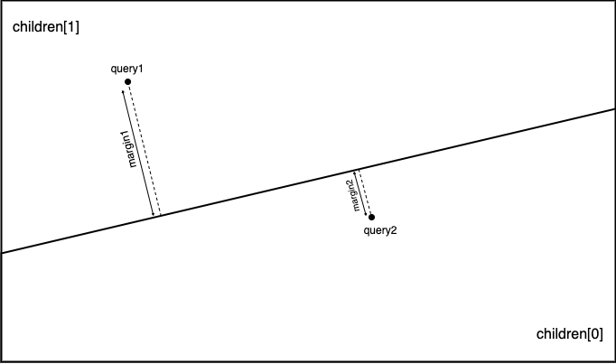

Goで類似ベクトルを検索する
はじめに
類似ベクトル検索を実現する代表的な実装にAnnoyがあります． 今回，Goの修練としてAnnoyの一部機能をGoで再実装しました．
やったこと
- kd-treeベースの探索アルゴリズムを実装
- random projection treeベースの探索アルゴリズムを実装
- ann-benchmarksにてベンチマークを測定
Annoyの詳細
Annoyの詳細については以下のページが大変勉強になりました．
個人的には探索時のノードの取り扱い方が特に面白いと思ったので，そこの部分について少しだけ補足をしたいと思います．
上記ページでも解説されている通り，探索時はD::pq_distanceの結果を優先度として優先度付きキューにノードを追加します． 以下に実際にこの処理を行う箇所のコードを示します．
} else {
T margin = D::margin(nd, v, _f);
q.push(make_pair(D::pq_distance(d, margin, 1), static_cast<S>(nd->children[1])));
q.push(make_pair(D::pq_distance(d, margin, 0), static_cast<S>(nd->children[0])));
}ここで，各変数と関数の詳細は以下の通りです．
D: ベクトル間のメトリックD::margin: クエリvから際（上述の解説ページに倣います）までの符号付き距離を計算D::pq_distance: 探索するノードの優先度を計算d: 根ノードから現在のノードに至るまでの最悪の優先度q: 探索するノードを決定するための優先度付きキューnd: 現在のノード
従って，ここではD::pq_distance(d, margin, 1)という優先度でnd->children[1]を，D::pq_distance(d, margin, 0)という優先度でnd->children[0]を，優先度キューに追加していることがわかります．
次に，DをEuclideanとしてD::pq_distanceの詳細を示します．Euclideanにはpq_distanceが実装されていないため，実際にはMinkowskiの実装となります．
template<typename T>
static inline T pq_distance(T distance, T margin, int child_nr) {
if (child_nr == 0)
margin = -margin;
return std::min(distance, margin);
}上記実装では，child_nr==0が成立する場合，marginの符号を反転しています． この処理の具体例を以下の図に示します． 子ノードとしてchildren[1]を選択した場合を考えます．この時，query1に対するマージンはmargin1，query2に対するマージンは-margin2となります． 同様に子ノードとしてchildren[0]を選択した場合を考えます．この時，query1に対するマージンは-marign1, query2に対するマージンはmargin2となります．

その結果，子ノードの優先度は当該ノードが存在する側を正とした符号付き距離となります．
distanceは前述のd（現在のノードに至るまでの最悪の優先度）が割り当てられています． 従って，pq_distanceは優先度が悪化した場合にその値を更新する振る舞いとなっていることが解ります．
この性質によって，クエリが存在する側（優先度が正）のノードの探索が完了すると，クエリが存在しない側（優先度が負）のノードの探索に取り掛かります． この様に, 場合分け等を行うことなく適切に次に探索すべきノードを選択できている点が非常に面白い実装だと思いました．
実装詳細
今回実装した主要なインターフェースと実装の関係を以下に示します．
上図の各要素の詳細は詳細は以下のとおりです．
- Index: 類似ベクトル検索のインターフェース．このインターフェースを用いてデータの登録や検索を実施
- Candidate: 検索結果を表現する構造体
- flatIndex: 線形探索による類似ベクトル検索の実装
- bspTreeIndex: バイナリ空間分割木による類似ベクトル検索の実装
- CutPlane: 際のインターフェース．このインターフェースを用いて空間を分割
- kdCutPlane: Kd-Treeを実現するための際の実装
- rpCutPlane: Random Projection Treeを実現するための際の実装
Kd-TreeとRandom Projection Treeとは際をどの様に計算するかの違いしかありません． そこで，bspTreeIndexとCutPlaneの組み合わせで表現することとしました． 従って，Kd-Treeは
bspTreeIndex[T, U, kdCutPlane[T, U]]と表現することができます．また，Random Projection Treeは
bspTreeIndex[T, U, rpCutPlane[T, U]]と表現することができます．
ベンチマーク
類似ベクトル検索のベンチマークにann-benchmarksがあります． 今回の実装をこのベンチマークに対応させることで，既存の実装とパフォーマンスを比較しました．
ann-benchmarksへアルゴリズムを追加する
ann-benchmarksへ新規にアルゴリズムを追加するためには，以下の作業が必要となります． また，これらの修正結果はこちらから取得可能です．
アルゴリズムが動作するイメージのDockerfileを追加
ann-benchmarks/install/Dockefile.<algorithm name>というファイルに追加するアルゴリズムが動作するイメージの定義を記述します． ベンチマークを実施するための共通処理はann-benchmarksというイメージに実装されています． 従って，このイメージを継承して不足分を追記することになります．
今回はGoでアルゴリズムを実装しました． 従って，以下のように
- 実行ファイルをビルド
- ベンチマーク用イメージにコピー
という手順を踏むこととしました．
FROM golang:1.18-rc as builder
RUN go install github.com/ar90n/countrymaam/cmd/countrymaam@latest
FROM ann-benchmarks
COPY --from=builder /go/bin/countrymaam /usr/local/bin類似ベクトル検索を行うプログラムを追加
ann-benchmarks/ann_benchmarks/algorithms/<algorithm name>.pyというファイルに類似ベクトル検索を行うプログラムを記述します． 拡張子からも明らかですが，ベンチマークはPythonによって実装されています． 従って，類似ベクトル検索アルゴリズムもPythonから呼び出す必要があります． 具体的には，BaseANNを継承し以下のメソッドを実装します．
- fit: インデックスを作成します．引数として，サイズが
(サンプル数,次元)のnumpy.arrayが渡されます - set_query_arguments: テストセットに対する検索を行う前に一度だけ呼び出されます．検索に対するパラメータの設定を行います
- query: 類似ベクトル検索を行います．引数としてクエリと求める類似ベクトルの数が渡されます
- __init__: 引数として渡されたパラメータをもとにアルゴリズムの初期化します
- __str__: 現在のパラメータとクラス名を文字列として返します
今回の実装ではPythonインターフェースを実装していません． 従って，実行ファイルをサブプロセスとして起動し，パイプを経由してデータの入出力を行います． 作成したクラスを以下に示します．
class Countrymaam(BaseANN):
def __init__(self, metric, params):
self._metric = metric
self._index = params.get("index", "kd-tree")
self._n_trees = params.get("n_trees", 8)
self._leaf_size = params.get("leaf_size", 8)
def fit(self, X):
X = X.astype(np.float64)
suffix = "".join(random.choices(string.ascii_lowercase, k=16))
index_file_path = f"index_{suffix}_{os.getpid()}.bin"
# インデックスを作成し，ファイルに書き出す
p = subprocess.Popen([
"countrymaam",
"train",
"--dim", str(len(X[0])),
"--index", self._index,
"--leaf-size", str(self._leaf_size),
"--tree-num", str(self._n_trees),
"--output", index_file_path
], stdin=subprocess.PIPE)
p.stdin.write(struct.pack(f"={X.size}d", *np.ravel(X)))
p.communicate()
p.stdin.close()
# インデックスを読み，クエリの入力を待機する
self._pipe = subprocess.Popen([
"countrymaam",
"predict",
"--dim", str(len(X[0])),
"--index", self._index,
"--input", index_file_path
], stdin=subprocess.PIPE, stdout=subprocess.PIPE)
def set_query_arguments(self, search_k):
self._search_k = search_k # 探索ノード数を設定
def query(self, v, n):
v = v.astype(np.float64)
self._pipe.stdin.write(struct.pack(f"=i", self._search_k)) # 探索ノード数
self._pipe.stdin.write(struct.pack(f"=i", n)) # 検索する類似ベクトル数
self._pipe.stdin.write(struct.pack(f"={v.size}d", *v)) # クエリベクトル
self._pipe.stdin.flush()
rn = struct.unpack("=i", self._pipe.stdout.read(4))[0]
ret = [0] * rn
for i in range(rn):
ret[i] = struct.unpack("=i", self._pipe.stdout.read(4))[0]
return np.array(ret)
def __str__(self):
return f"Countrymaam(index={self._index}, leaf_size={self._leaf_size} n_trees={self._n_trees}, search_k={self._search_k})"ベンチマークの設定ファイルにアルゴリズムの設定を追加
ベンチマークに関する設定はann-benchmarks/algos.yamlというファイルに追記します． このファイルはデータ型 -> メトリック -> アルゴリズム という階層構造になっています． 従って，各アルゴリズムがサポートしているデータ型とメトリックに応じて，適切な位置に設定を記述する必要があります．
データ型とメトリックの組み合わせは以下の通りです．
- float
- any
- euclidean
- angular
- bit
- hamming
- jaccard
今回実装したアルゴリズムはユークリッド距離にのみ対応しているためeuclideanに追記します．
アルゴリズムの階層に記述するパラメータは以下の通りです．
- docker-tag: 使用するDockerイメージのタグ
- module: アルゴリズムが実装されているモジュール
- constructor: アルゴリズムの実装クラス
- base-args: 全計測に渡ってconstructorに渡される引数の共通部分
- run-groups: constructorとset_query_arguments渡される引数の可変部分
最終的な差分は以下の様になりました．
diff --git a/algos.yaml b/algos.yaml
index 7c1ebe6..f170633 100644
--- a/algos.yaml
+++ b/algos.yaml
@@ -391,6 +391,28 @@ float:
query-args: [[0.6, 0.8, 0.9, 1.0, 1.02, 1.05, 1.1, 1.2]]
euclidean:
+ countrymaam-kd:
+ docker-tag: ann-benchmarks-countrymaam
+ module: ann_benchmarks.algorithms.countrymaam
+ constructor: Countrymaam
+ base-args: ["@metric"]
+ run-groups:
+ kd:
+ arg-groups:
+ - {"index": ["rkd-tree"], "n_trees": [8, 16, 32, 64],
+ "leaf_size":[8, 16, 32, 64]}
+ query-args: [[16, 32, 64, 128, 256, 512, 1024, 2048]]
+ countrymaam-rp:
+ docker-tag: ann-benchmarks-countrymaam
+ module: ann_benchmarks.algorithms.countrymaam
+ constructor: Countrymaam
+ base-args: ["@metric"]
+ run-groups:
+ rp:
+ arg-groups:
+ - {"index": ["rrp-tree"], "n_trees": [8, 16, 32, 64],
+ "leaf_size":[8, 16, 32, 64]}
+ query-args: [[16, 32, 64, 128, 256, 512, 1024, 2048]]
vamana(diskann):
docker-tag: ann-benchmarks-diskann
module: ann_benchmarks.algorithms.diskannrun-groupsにおけるarg-groupsが__init__に渡されるパラメータを，query-argsがset_query_argumentsに渡されるパラメータを表します． arg-groupsの様に複数の属性からなるパラメータは各属性の直積が渡されます．
ベンチマークの実行
ベンチマークは以下のコマンドで実行します．install.pyはコンテナの作成を，run.pyはベンチマークを実行します． <algorithm name>と<dataset name>は省略可能です．省略した場合，適用可能な全てのアルゴリズムまたはデータセットに対して処理を適用します．
$ python install.py --algorithm <algorithm name>
$ python run.py --algorithm <algorithm name> --dataset <dataset name>結果
以下の結果は，fashion-mnistに対するベンチマークです．図中のflannとannoyはann-benchmarksのデフォルト設定を用いています．
- CPU: AMD Ryzen 9 3950X
- Memory: 64GB
参考
- Fashion-MNIST: a Novel Image Dataset for Benchmarking Machine Learning Algorithms, Han Xiao and Kashif Rasul and Roland Vollgraf, 2017
- ann-benchmarks
- Annoy